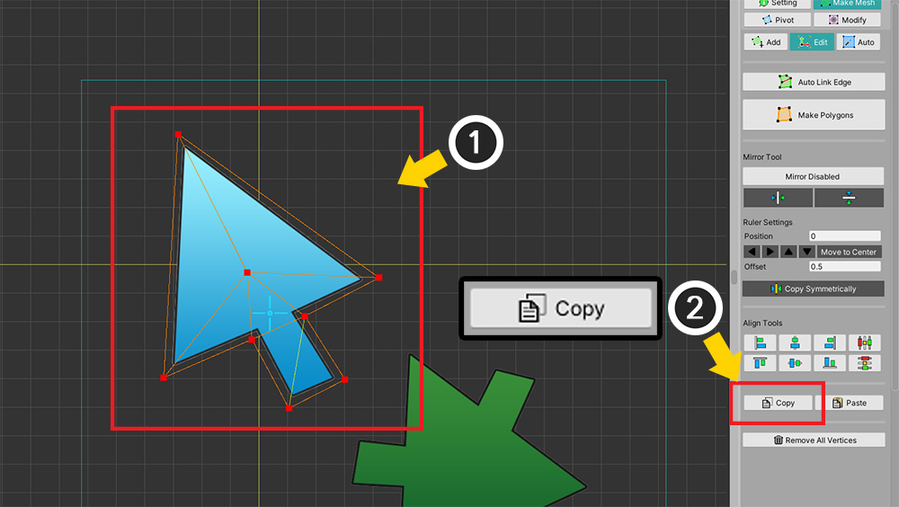
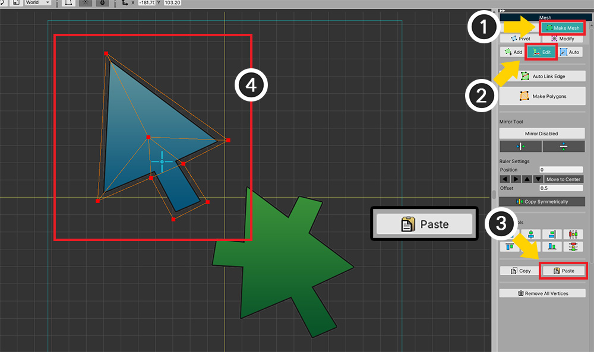

AnyPortrait > マニュアル > 頂点のコピー
頂点のコピー
1.3.4
画像アトラス（Atlas）内に類似した画像が2つ以上存在するとき、メッシュの頂点をコピーして、繰り返される作業を減らすことができます。
このページでは、メッシュの頂点をコピーして、同じメッシュに貼り付けたり、他のメッシュに貼り付ける方法を紹介します。

(1) メッシュを選択します。
(2) 「Make Mesh」タブを選択します。
(3) 「Edit」ツールを選択します。
(4) コピーしたい頂点を選択します。

(1) 頂点が選択された状態です。
(2) 「Copyボタン」を押して、頂点をコピーします。

(1) 「Pasteボタン」を押すと、コピーされた頂点を貼り付けることができます。
現在同じ場所に、既存の頂点がありますので、貼り付けがされたかどうかを区別しません。
(2) 移動ツール（ショートカットキー W ）を選択します。
(3) 頂点を移動させると、コピーされた頂点を見ることができます。

今回は、他のメッシュに頂点をコピーしてみましょう。
前の過程で、「Copyボタン」を押して、頂点をコピーした状態で開始します。
(1) 新しいメッシュを生成します。
(2) 生成された新しいメッシュは頂点がありません。

(1) 「Make Mesh」タブを選択します。
(2) 「Edit」ツールを選択します。
(3) 「Pasteボタン」を押します。
(4) コピーされている頂点を現在のメッシュに貼り付けることができます。

コピーされた頂点を用いて同様の画像でのメッシュを素早く作成することができます。